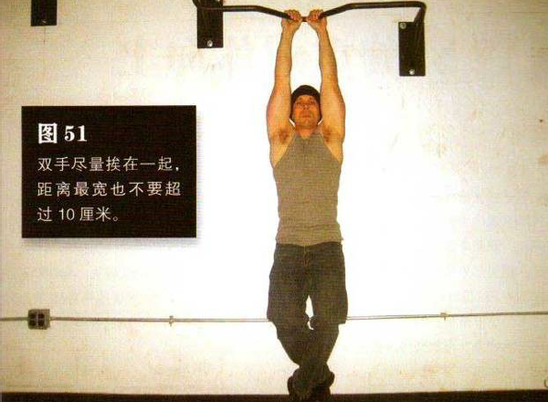
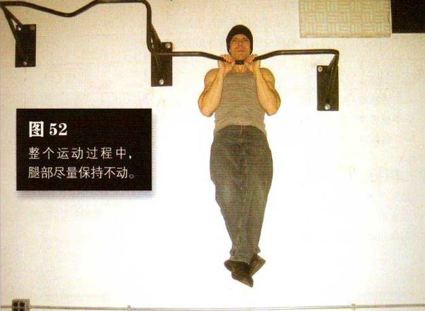

向上跳起抓住横杆，采用正握姿势，双手尽量挨在一起—如果距离太近关节会感到不适，但最宽也不要超过 10 厘米。双膝弯曲，双脚脚跺交叠在一起并置于身后，以免腿部借力。肘部微微弯曲，双肩收紧
弯曲肘部，夹起肩部，平缓地将自己拉起来，直到下巴高过横杆。这是该动作的结束姿势（图 52）。暂停一下，然后再慢慢放低身体，回到起始姿势。暂停，然后再重复。整个运动过程中，腿部尽量保持不动。
有些练习标准引体向上的训练者会觉得窄距引体向上有点儿难，因为双手间距缩小的话，我们在上拉身体的时候手臂会不自觉地向内扭转—正握的姿势有时会限制这种自然倾向。这是试验各种抓握姿势的好时候，你不妨尝试一下侧握或反握姿势。如果条件允许，也可以尝试使用吊环。如果力量不足，那就继续练习标准引体向上，每次练习时把两手的距离缩小两厘米，久而久之你便会掌握窄距引体向上
初级标准：1 组，5 次
中级标准：2 组，各 8 次
高级标准：2 组，各 10 次